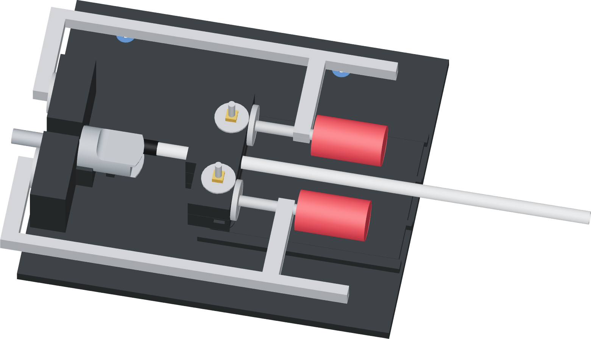

Leave both handles clear
Secure the base on a firm bench so both hands can turn the wooden screw handles. Keep the two metal frames in their seating plane.

- Set the base flat with room for the donor shank, both complete metal clamp frames and the free tube.
- Use the two owned 4-inch steel C-clamps to hold the base at the bench edge, clear of all moving parts. Existing mounting bolts can also use the base holes.
- Check handle access unloaded. Keep the tube and faucet lever out of both clamp frames and keep each screw pad aimed squarely at its rear grip contact.
Finished when
The base stays stationary and both hands can reach and turn their handles without shifting a clamp or touching the tube.